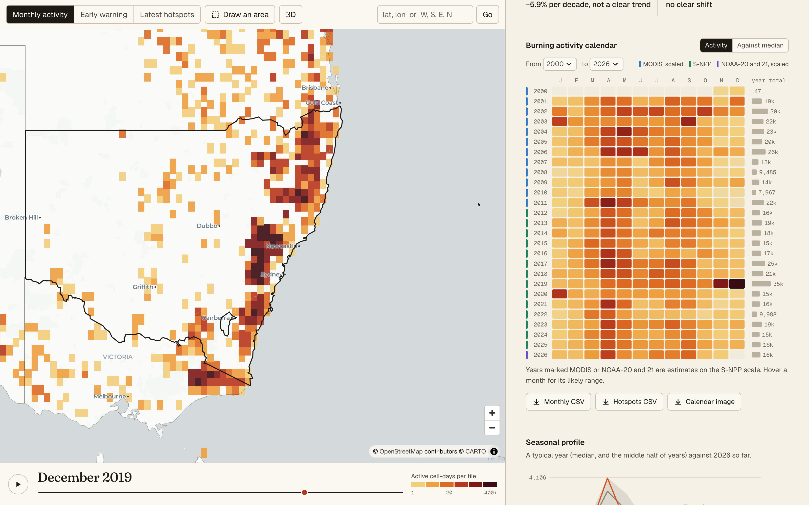
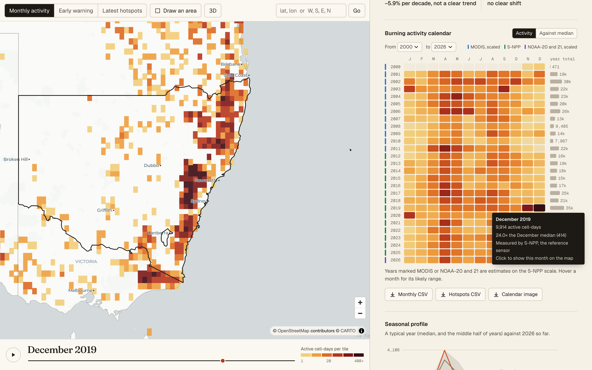
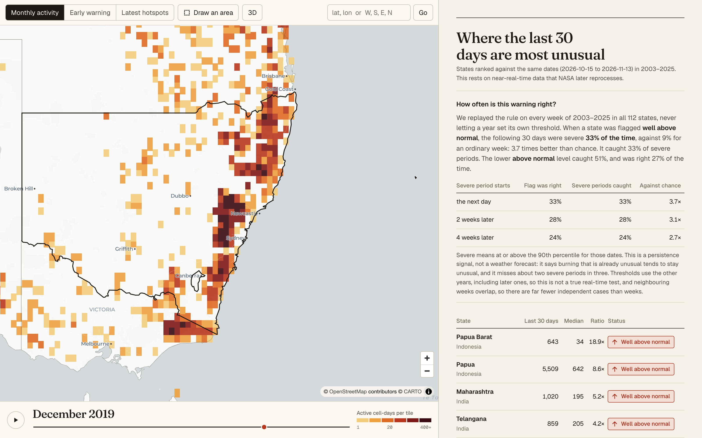

Challenge: Harmonization of MODIS and VIIRS Hot Spots
The newer VIIRS sensors see about three times as much fire as MODIS. Join the records and every trend breaks in 2012.
New South Wales, December 2019: the Black Summer fires. Nobody told it where to look.


better than chance at flagging a severe month ahead

One fire record for managers and scientists, from 2000 to today.